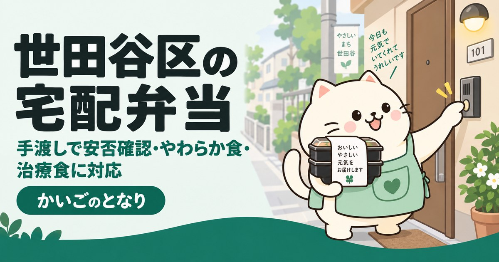

板橋区の高齢者向け宅配弁当・配食サービス｜料金比較と選び方

東京都板橋区で高齢者向けの宅配弁当を探している方へ。区内に配達できるサービス6件を連絡先つきで掲載し、やわらか食・ムース食・治療食の料金、手渡しによる安否確認、区の配食事業までまとめました。
目次
板橋区に配達できるのは6件
高齢者向けの配食サービスは、事業者ごとに配達できる範囲が細かく分かれています。板橋区の場合、区内に配達を公表しているのは6件。まごころ弁当が3店舗と最も多く、ライフデリと宅配クック123も配達エリアに入っています。
板橋区に配達するサービス一覧
2026年9月時点で板橋区への配達を公表しているサービスを掲載しています。配達エリアは町域単位で細かく分かれているため、板橋区内でも申し込み前に必ずご自宅の住所で確認してください。
1まごころ弁当 板橋本店
- 所在地
- 東京都 板橋区 大和町43-7 サンハイツ大和町101号
- 電話
- 03-6905-7166
- 対応エリア
- 板橋区全域
2まごころ弁当 板橋和光店
- 所在地
- 東京都 板橋区 赤塚5-5-5-103
- 電話
- 03-6909-8172
- 対応エリア
- 板橋区全域・埼玉県和光市全域
3まごころ弁当 板橋中央店
- 所在地
- 東京都 板橋区 高島平1-20-5 飯島ハイツ105
- 電話
- 03-6906-5303
- 対応エリア
- 板橋区（一部地域除く）
4ライフデリ板橋区・北区店
- 所在地
- 東京都 板橋区 志村3-17-21 同和マンション101号
- 電話
- 03-6909-7706
- 対応エリア
- 板橋区・北区
5宅配クック123（板橋区配達対応）
- 対応エリア
- 板橋区内（担当店舗は町域により異なる）
6板橋区 高齢者等配食サービス事業（事業者登録制）
- 電話
- 03-3579-2464
- 対応エリア
- 板橋区
- 特徴
- 板橋区内に在住の65歳以上が対象。登録事業者が手渡しで届け、安否確認を行い、異常があれば関係機関へ連絡します。費用は全額自己負担で事業者ごとに異なります。（窓口: 健康生きがい部 高齢政策課 高齢者相談・給付係）
上記6件は、2026-09-21に板橋区および各事業者の公表情報で確認した内容です。営業時間・対応エリア・空き状況は変動しますので、連絡の前に必ず公式情報をご確認ください。掲載内容の訂正・削除のご依頼は運営者までご連絡ください。
掲載6件の内訳
板橋区に店舗があるのは4件で、残り1件は区外の店舗またはエリア対応です。板橋区内でも店舗によって「区内全域」と「一部地域を除く」が混在するため、番地まで伝えて確認するのが確実です。
| サービス | 店舗の所在地 | 配達できる範囲 |
|---|---|---|
| まごころ弁当 板橋本店 | 板橋区 | 板橋区全域 |
| まごころ弁当 板橋和光店 | 板橋区 | 板橋区全域・埼玉県和光市全域 |
| まごころ弁当 板橋中央店 | 板橋区 | 板橋区（一部地域除く） |
| ライフデリ板橋区・北区店 | 板橋区 | 板橋区・北区 |
| 宅配クック123（板橋区配達対応） | — | 板橋区内（担当店舗は町域により異なる） |
| 板橋区 高齢者等配食サービス事業（事業者登録制） | 板橋区（行政） | 区が定める対象者 |
※区外に店舗がある場合でも、配達エリアに入っていれば利用できます。逆に区内の店舗でも一部の町域に配達できないことがあります。
ライフデリ板橋区・北区店の料金
まごころ弁当と宅配クック123は店舗ごとに料金が違い、板橋区担当店の価格は公式サイトに出ていません。料金を公開しているライフデリについて、板橋区を担当するライフデリ板橋区・北区店の価格を掲載します。
| 食形態 | おかずのみ | ごはんセット | こんな方に |
|---|---|---|---|
| 普通食 | 590円 | 670円 | 食事づくりが負担になってきた方 |
| やわらか食 | 750円 | 830円 | 噛む力が落ちてきた方 |
| ムース食 | 680円 | 760円 | 飲み込みに不安がある方 |
| カロリー調整食 | 780円 | 860円 | 糖尿病などでカロリー管理が必要な方 |
| 腎臓食 | 860円 | 940円 | たんぱく質・塩分制限がある方 |
| 透析食 | 870円 | 950円 | 人工透析を受けている方 |
※食形態の違いと選び分けは介護食の形態と選び方で解説しています。夕食のみ（ごはんセット670円）を週5回で、1か月およそ14,405円前後です。
板橋区の配食サービス（区の事業）
板橋区の配食は事業者登録制です。区が事業者を登録し、利用者は登録事業者に直接電話で申し込みます。対象は区内在住の65歳以上。手渡しで届けるときに安否確認を行い、異常が判断された場合は関係機関に連絡が入ります。
なお民間の宅配弁当は介護保険の給付対象外で全額自己負担ですが、要介護認定がなくても使え、区分支給限度基準額の枠を消費しません。
申し込む前に
板橋区の事業者に連絡する前に、次の2点だけ決めておくと1回の電話で済みます。
- ご自宅の町名・番地同じ板橋区内でも「一部地域を除く」店舗があります。上の一覧の配達エリアは目安です。
- 必要な食形態普通食か、やわらか食か、治療食か。迷うときは試食を申し込んで、本人が食べきれるか確かめてください。
よくある質問
板橋区で高齢者向けの宅配弁当を頼むには、どこに連絡すればいいですか？
上の一覧にある事業者へ直接お電話ください。まずは配達エリアにご自宅の町名が入っているかを確認し、無料試食を申し込むのが確実です。どれを選ぶか迷う場合は、地域包括支援センターでも相談できます。
宅配弁当は介護保険で安くなりますか？
民間の配食サービスは介護保険の給付対象外で、全額自己負担です。そのかわり要介護認定がなくても使え、区分支給限度基準額を圧迫しないという利点があります。板橋区の区の事業を利用できる場合は、自己負担の条件が変わることがあります。
やわらか食やムース食は普通食よりどのくらい高いですか？
ライフデリ板橋区・北区店の公表価格では、ごはんセットで普通食670円に対し、やわらか食830円、ムース食760円です。治療食（腎臓食940円・透析食950円）はさらに上がります。価格は改定されることがあるため、申し込み前に公式情報をご確認ください。
毎日でなくても頼めますか？
週に数回、夕食だけという使い方が一般的で、板橋区に配達する6件はいずれも食数と曜日を選べます。ただし変更・休止の締め切り時間は事業者ごとに違うため、板橋区で複数を比べるときはここも聞いておいてください。
留守のときはどうなりますか？
板橋区に配達する事業者の多くは手渡しが原則で、応答がないときは再訪問するか、登録した緊急連絡先へ連絡します。この手順こそが安否確認の中身なので、板橋区で申し込む前に「何分待つか」「誰に連絡するか」まで確認してください。日中の不在が多いご家庭は、板橋区の見守りサービスと組み合わせたほうが確実です。
板橋区の町域一覧（対応エリアの目安）
板橋区の町域は57。五十音では9行にわたり、最も多いのはあ行の15件です。掲載事業者の対応範囲は町域単位で分かれているため、問い合わせのときは「板橋区本町」のように町名まで伝えてください。
- 相生町
- 赤塚
- 赤塚新町
- 小豆沢
- 泉町
- 板橋
- 稲荷台
- 大原町
- 大谷口
- 大谷口上町
- 大谷口北町
- 大山金井町
- 大山町
- 大山西町
- 大山東町
- 加賀
- 上板橋
- 熊野町
- 小茂根
- 幸町
- 栄町
- 坂下
- 桜川
- 清水町
- 志村
- 新河岸
- 高島平
- 大門
- 東新町
- 常盤台
- 徳丸
- 中板橋
- 仲宿
- 中台
- 仲町
- 中丸町
- 成増
- 西台
- 蓮沼町
- 蓮根
- 氷川町
- 東坂下
- 東山町
- 富士見町
- 双葉町
- 舟渡
- 本町
- 前野町
- 三園
- 南町
- 南常盤台
- 宮本町
- 向原
- 大和町
- 弥生町
- 四葉
- 若木
※町域ごとの事業者ページは、掲載できる事業者が3件以上そろった町域から順次公開します。
板橋区の他のサービスを探す
近隣エリアの宅配弁当
- まごころ弁当 公式サイト「東京都 板橋区の配食サービス店舗」
- ライフデリ 公式サイト「ライフデリ板橋区・北区店」（料金表を含む）
- 宅配クック123 公式サイト「店舗検索（東京都板橋区）」
- 板橋区「板橋区 高齢者等配食サービス事業（事業者登録制）」（健康生きがい部 高齢政策課 高齢者相談・給付係）
最終確認日：2026-09-21／制度・料金は改定される場合があります。ご利用前に各窓口・各事業者で最新情報をご確認ください。